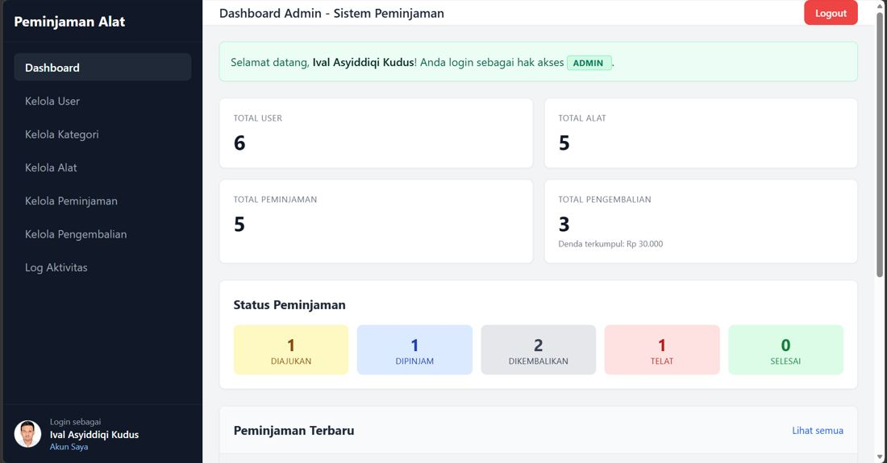
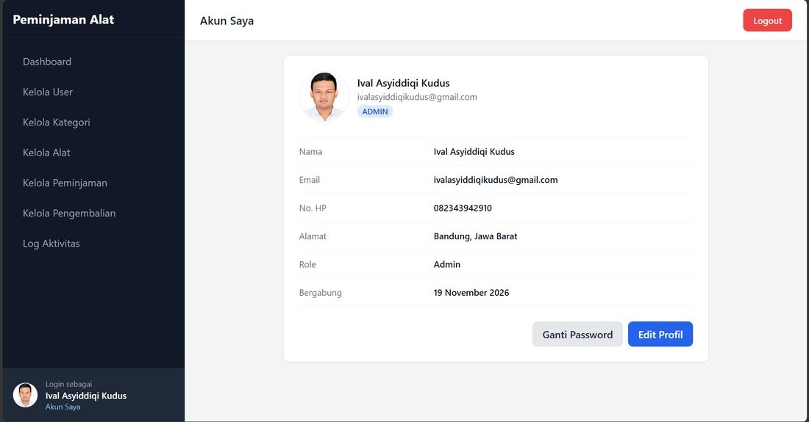
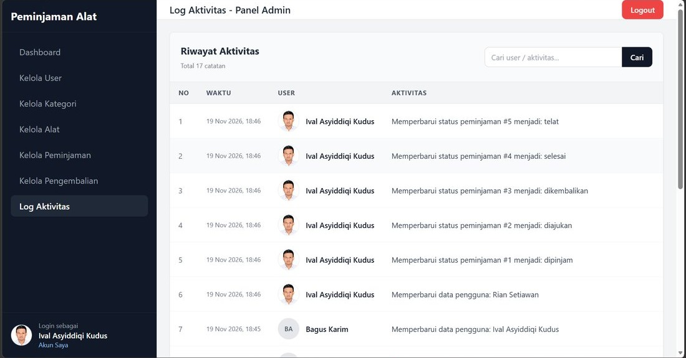
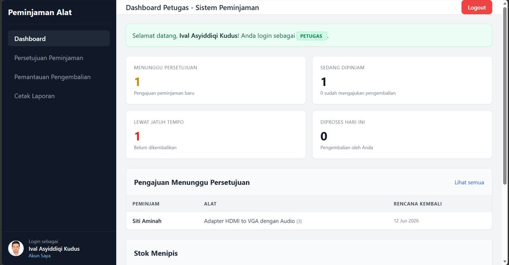
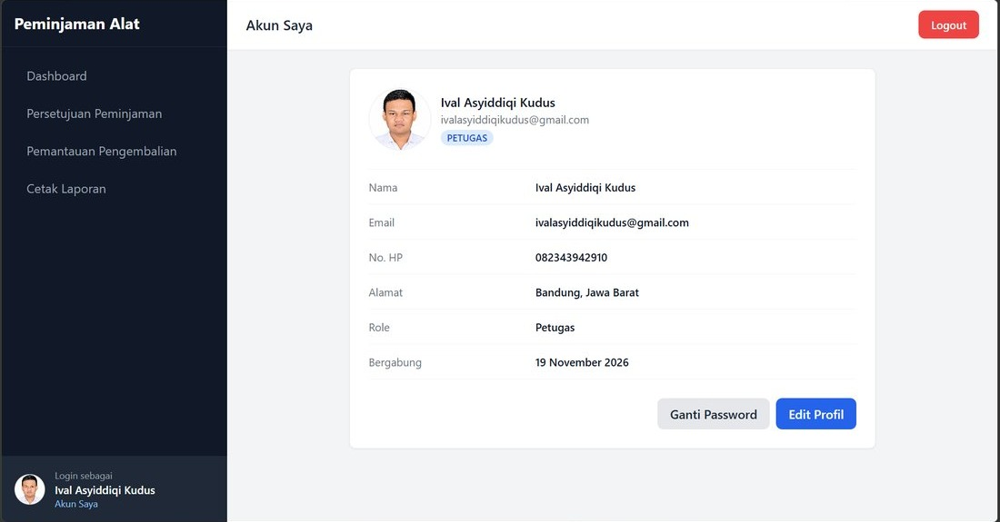
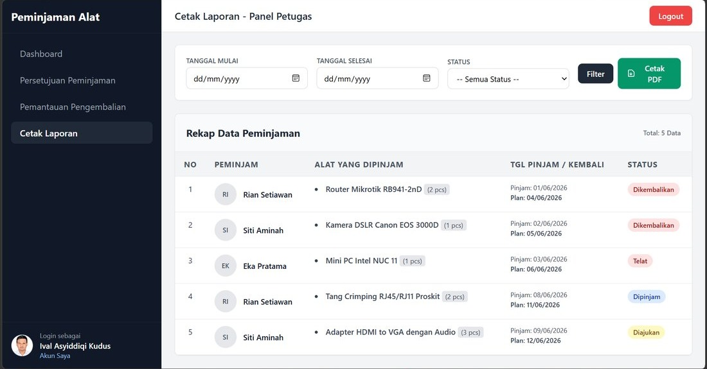
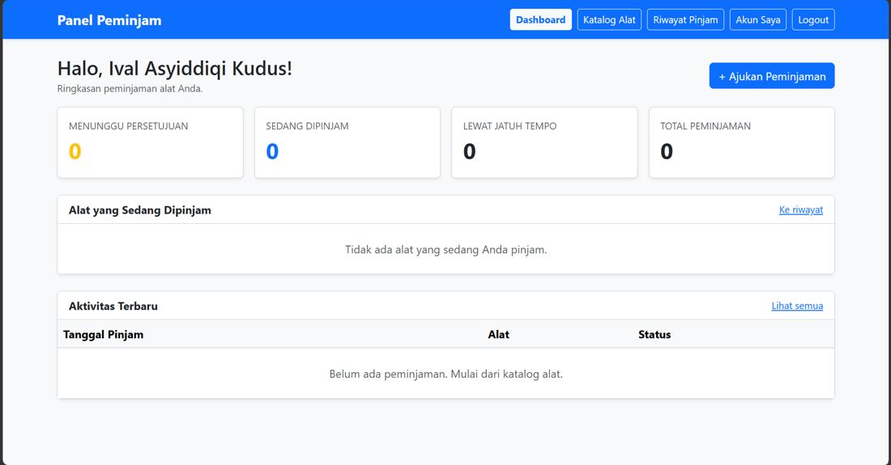
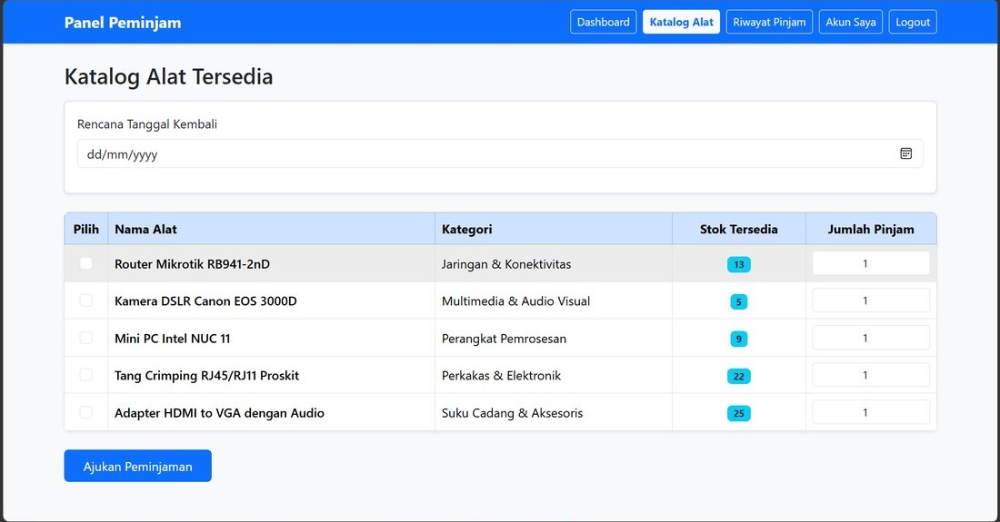
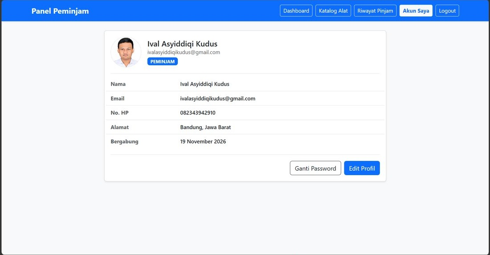

Sistem Peminjaman Alat
Aplikasi web peminjaman alat berbasis REST API dengan tiga peran pengguna. Admin mengelola user, kategori, alat, dan memantau log aktivitas. Petugas menyetujui pengajuan, memantau pengembalian, dan mencetak laporan. Peminjam memilih alat dari katalog, mengajukan peminjaman, lalu mengajukan pengembalian. Backend dibangun dengan Laravel dan dijalankan memakai Docker Compose, dilengkapi diagram UML untuk perancangan.
- Diajukan
- Dipinjam
- Dikembalikan
- Selesai
- Laravel
- REST API
- Docker
- Multi-role
- UML








